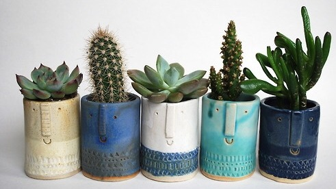
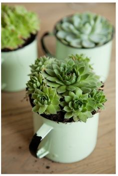
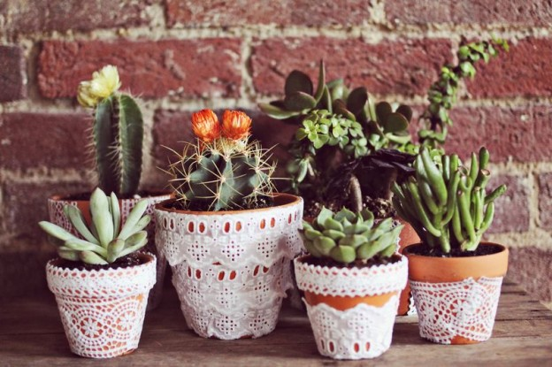

Click image to go to home page.
Potting Ideas
Home
The Cacti Collection
Plant Potting Ideas
My Favorites
Pros and Cons
My Plants

When using ceramic pots are clever, add more rocks to the bottom for filteration.

Mugs are also a good option if you have a lot laying around. Again, for best filteration, add rocks to the bottom or drill holes in the bottom.

Simple ceramic pots like these only cost a few dollars, but they can be decorated in a varity of ways to make them more elegant.